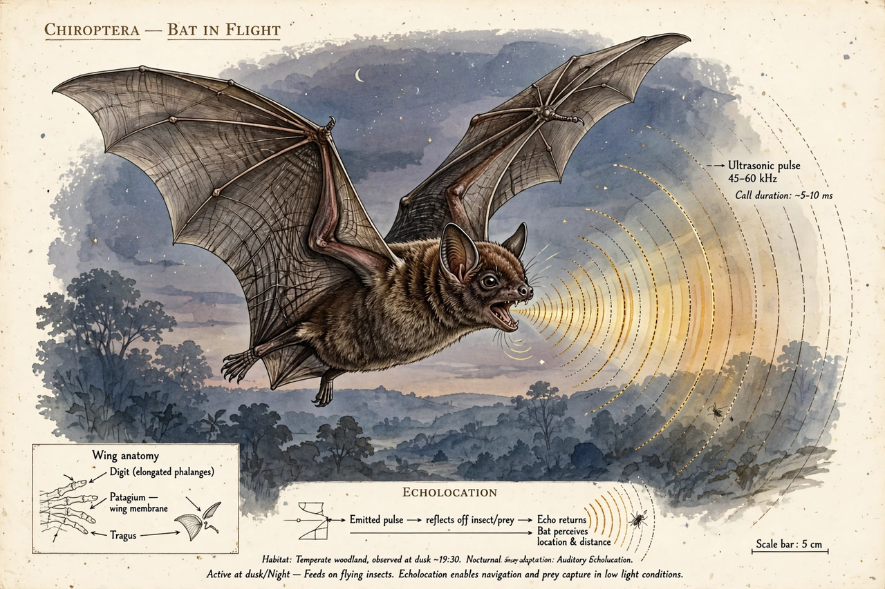

Donald Griffin
| Donald R. Griffin | |
|---|---|
| Born | 3 August 1915, Southampton, New York, U.S. |
| Died | 7 November 2003 (aged 88), Lexington, Massachusetts |
| Alma mater | Harvard University |
| Known for | Discovery of echolocation in bats; founding cognitive ethology |
| Fields | Zoology, ethology, animal cognition |

Donald Redfield Griffin (August 3, 1915 – November 7, 2003) was an American zoologist whose work transformed the scientific study of animal behaviour. With Robert Galambos, he discovered that bats navigate and hunt using echolocation, and later in his career he founded the field of cognitive ethology, arguing that animal consciousness and mental experience are legitimate subjects of scientific inquiry.
Echolocation
As a Harvard undergraduate and graduate student in the late 1930s, Griffin used newly developed ultrasonic detection equipment, working with physicist G. W. Pierce's apparatus and with Robert Galambos, to show that bats emit high-frequency sounds and use the returning echoes to avoid obstacles and locate prey. In 1944 he coined the term "echolocation" for this biological sonar, a phenomenon also found in toothed whales and some birds. His monograph Listening in the Dark (1958) summarised the field.
Career
Griffin taught at Cornell University and Harvard University, and from 1965 at Rockefeller University in New York, where he remained until his retirement. He was elected to the U.S. National Academy of Sciences and was active in conservation, including early advocacy for the protection of bats.
Cognitive ethology
In The Question of Animal Awareness (1976) and later books including Animal Thinking (1984) and Animal Minds (1992), Griffin challenged the behaviourist taboo — epitomised for an earlier generation by the caution prompted by cases such as Clever Hans — against attributing mental states to animals, arguing that evidence of versatile, adaptive behaviour makes animal consciousness a testable hypothesis. His advocacy helped legitimise modern research on animal cognition.
Selected works
- Listening in the Dark (1958)
- Echoes of Bats and Men (1959)
- The Question of Animal Awareness (1976)
- Animal Thinking (1984)
- Animal Minds: Beyond Cognition to Consciousness (1992, rev. 2001)